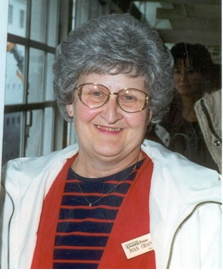
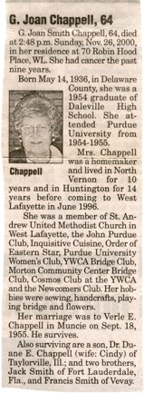
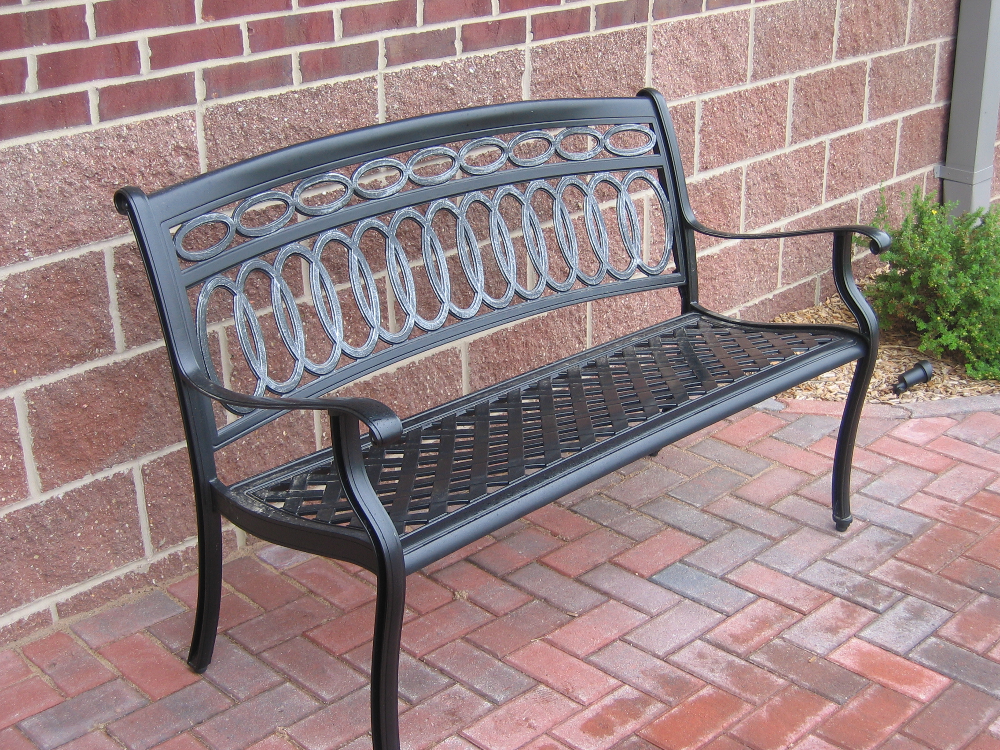
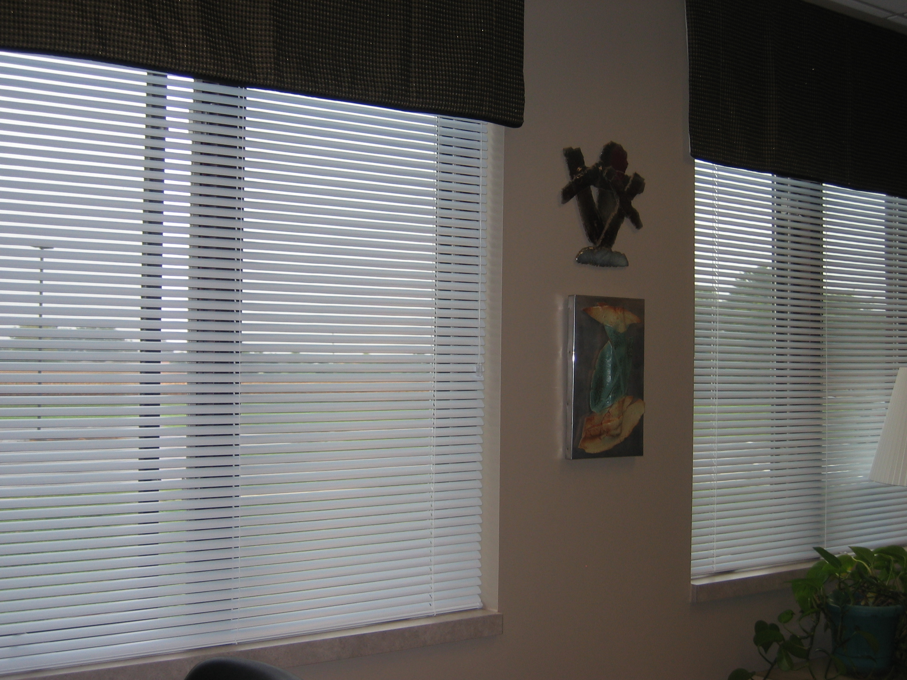

G. Joan Smith Chappell
May 14,1936 to Nov. 26, 2000
Relationship to St. Andrew: Joan was a member of St. Andrew since 1996.
Family: Joan and Verle Chappell were married on Sept. 18, 1955. They had two sons, Duane of Taylorville, IL and Dale who preceded Joan in death.
Recognitions: Joan was a skilled seamstress and cook. She played competitive bridge and was an avid supporter of Purdue Athletics.
Memorial: A fund to provide health care equipment for use in the home of the St. Andrew Congregation was established. In 2005 at the request of the Family, remaining funds were designated for equipment in the relocated church. In 2007 these funds were used to purchase two wrought iron benches for the patio area. The remainder of the funds was used for custom mini-blinds for the Church.


Two Wrought iron benches are located on the patio.

Custom Mini-blinds for the Church.